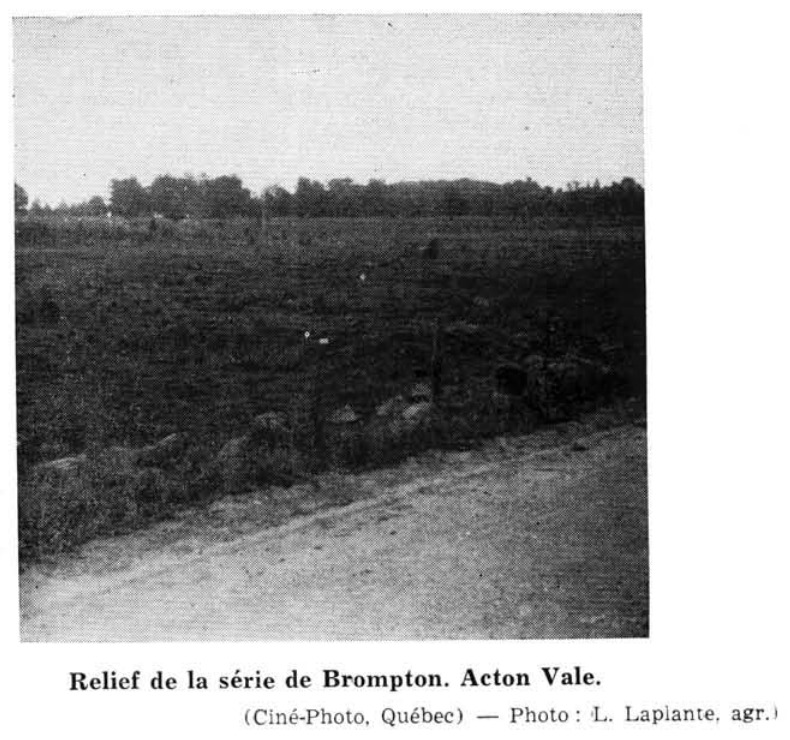

Identification & Caractéristiques Générales
La série Brompton se développe sur un till morainique à texture de loam, de loam sablo-argileux ou caillouteux, renfermant des fragments de grès désagrégé, d'ardoises et de schistes. Ce matériau parental d'origine glaciaire caractérise des paysages de faibles pentes, de vallées, de bas-fonds et de dépressions topographiques où la série s'intègre comme membre à drainage déficient au sein de caténas incluant notamment les séries Leeds, Woodbridge, Roxton et Sainte-Marie.
Le profil morphologique se caractérise par une texture dominante de loam ou de franc sableux, caractérisée par une pierrosité abondante en surface et en profondeur, tant sous forme de petits cailloux que de blocs erratiques. L'égouttement naturel est déficient (mauvais à très mauvais) en raison de la position topographique bas située et de la compacité inhérente de l'horizon C, ce qui induit des conditions de saturation hydrique prolongée et la formation d'un gley gris foncé dans la couche arable lorsque l'horizon organique initial est incorporé par le labour. La réaction du sol est acide, avec des réserves minérales moyennes en azote, phosphore et potassium, et une tendance marquée à la compaction sous l'effet du ressuyage et des labours répétés.
Les aptitudes agronomiques de la série Brompton sont restreintes par l'excès d'eau chronique, la forte pierrosité et la compacité du substrat, exigeant des travaux majeurs d'épierrage et l'installation d'un réseau de drainage souterrain pour optimiser la mise en valeur. Les superficies défrichées sont principalement consacrées aux cultures fourragères, aux graminées et aux céréales, ou affectées à des pâturages permanents, tandis que les secteurs non aménagés ou marginaux supportent une végétation forestière composée d'érables, d'ormes, de hêtres, de bouleaux, ainsi que de conifères tels que le sapin, l'épinette et le cèdre. La régie culturale requiert un labour fréquent pour contrer la formation d'une sous-couche dure, un chaulage régulier pour corriger l'acidité et des interventions rigoureuses de gestion de l'eau.
Caractères Distinctifs & Morphologie Génétique (Comté de Dorchester — Page 25)
- Topographie : déprimée
- Drainage : mauvais
- Pierrosité : très pierreux — 2
- Grand-groupe génétique : gleysol
- Degré d'érosion : nul
- Classes d'utilisation : (C) 3W à 4P (Q) 4d à 6
- Association géographique : Leeds et Sainte-Marie
- Végétation naturelle : cèdres, ormes, épinettes noires, aulnes.
Classification Taxonomique & Environnement Pédologique
| Ordre Pédologique | Gleysolique |
|---|---|
| Grand Groupe (SCSS) | Gleysol humique |
| Sous-Groupe Taxonomique | Gleysol humique régosolique |
| Famille Pédologique | Loameuse-grossière, mixte sableux, neutre |
| Mode de Dépôt Parental | Morainique |
| Classe de Drainage Naturel | Mal drainé |
| Régime Thermique & Humidité | Frais / Subaquique |
Description Morphologique du Profil Type
Séquences génétiques des horizons pédologiques caractérisant le profil type représentatif de la série Brompton :
Profil naturel (vierge) — Comté de Shefford — Phase que l
✓ Source : Comté de Shefford — Page 42Couleur Munsell : Non précisée
Structure & Consistance : Granuleuse
Description morphologique : sol franc sableux à franc noir à brun foncé, généralement mélangé avec une litière de feuilles et des matières organiques semi décomposées; plusieurs racines; structure granuleuse; friable lorsqu'il est sec; spongieux lorsqu'il est humide; pH 5.2
Couleur Munsell : Non précisée
Structure & Consistance : Polyédrique à granulaire
Description morphologique : sol franc sableux gris; marbré; de ferme à compact lorsqu'il est sec; plusieurs petites pierres d'ardoise et de grès; pH 6.4
Couleur Munsell : Non précisée
Structure & Consistance : Polyédrique à granulaire
Description morphologique : sol franc sablonneux gris jaunâtre; ferme; marbré; horizons indistincts; quelques galets de grès et quelques grosses pierres; pH 6.4
Couleur Munsell : Non précisée
Structure & Consistance : Polyédrique à granulaire
Description morphologique : till franc sableux gris jaunâtre; de ferme à compact; fragments d'ardoise et quelques grosses pierres de grès; pH 6.6
Profil représentatif — Comté de Stanstead — Phase ondulée tend
✓ Source : Comté de Stanstead — Page 41Couleur Munsell : Non précisée
Structure & Consistance : Faible
Description morphologique : Terre franche noire; structure faible, friable; pH 5·2.
Couleur Munsell : Non précisée
Structure & Consistance : Polyédrique à granulaire
Description morphologique : Sablo-argileux compact, jaune grisâtre à blanc; nombreuses petites pierres; pH 5·4.
Couleur Munsell : Non précisée
Structure & Consistance : Polyédrique à granulaire
Description morphologique : Terre franche pierreuse, grise jaunâtre; marbrée; quelques galets; ferme à compacte; parfois très sablonneuse; pH 6·2.
Couleur Munsell : Non précisée
Structure & Consistance : Polyédrique à granulaire
Description morphologique : Sablo-argileux, gris jaunâtre; marbré; ferme à compact; quelques pierres de grès et d'ardoise; pH 6·8.
Profil forestier / boisé — Comté de Dorchester
✓ Source : Comté de Dorchester — Page 26Couleur Munsell : 10YR 4/2
Structure & Consistance : Polyédrique à granulaire
Description morphologique : Loam à loam argileux pierreux brun-gris foncé (10YR 4/2); légèrement humifère; sans consistance; pH: 4.2 — 5.0.
Couleur Munsell : 10YR 6/1
Structure & Consistance : Peu développée
Description morphologique : Loam à loam argileux pierreux gris (10YR 6/1); structure peu développée; légèrement massif; pH: 4.7 — 5.1.
Couleur Munsell : 10YR 4/1
Structure & Consistance : Peu développée
Description morphologique : Loam à loam argileux pierreux gris foncé (10YR 4/1); structure peu développée; massif; pH: 4.8 — 5.4
Couleur Munsell : 5Y 4/3
Structure & Consistance : Massive
Description morphologique : Loam à loam sablo-argileux pierreux olive (5Y 4/3); structure massive; compact; pH: 5.0 — 5.3.
Profil représentatif — Comté de Drummond — Phase ont été
✓ Source : Comté de Drummond — Page 55Couleur Munsell : Non précisée
Structure & Consistance : Polyédrique à granulaire
Description morphologique : Débris organiques peu ou pas décomposés.
Couleur Munsell : 10YR 3/1, 10YR 2/1
Structure & Consistance : Granulée fortement développée
Description morphologique : Loam sableux mêlé à la matière organique à demi-décomposée. La couleur à l'état sec est gris très foncé (10 YR 3/1) devenant noire (10 YR 2/1) à l'état humide; structure granulée fortement développée; friable. La réaction (pH 5.2) est fortement acide.
Couleur Munsell : 2.5Y 6/2
Structure & Consistance : Faiblement feuilletée
Description morphologique : Sable limoneux, gris brun clair (2.5 Y 6/2) à l'état sec; structure faiblement feuilletée; consistance ferme à l'état sec. La réaction (pH 5.4) est fortement acide.
Couleur Munsell : 5Y 6/3, 5Y 5/3, 10YR 5/6
Structure & Consistance : Polyédrique à granulaire
Description morphologique : Loam sablo-caillouteux, olive pâle (5 Y 6/3) à l'état sec, olive (5 Y 5/3) à l'état humide; de grandes taches brun jaune (10 YR 5/6) plaquent le profil; les cailloux sont anguleux et le sol légèrement tassé. La réaction (pH 6.0) est moyennement acide.
Couleur Munsell : 5Y 5/3
Structure & Consistance : Polyédrique à granulaire
Description morphologique : Méli-mélo de loam sableux et de sable caillouteux de couleur olive (5 Y 5/3) nuancée de teintes plus pâles et plus foncées; le sol est tassé, compact et tenace. La réaction (pH 6.4) est faiblement acide.
Profil forestier (sous boisé) — Comté de Frontenac
✓ Source : Comté de Frontenac — Page 59Couleur Munsell : 5YR 2.5/1, 10YR 2.5/1
Structure & Consistance : Polyédrique à granulaire
Description morphologique : Horizon organique noir (5 YR 2.5/1 h), noir à gris très foncé (10 YR 2.5/1 s); granulaire, très fine, faible à modérée; très friable; racines très abondantes, de toutes les grosses, non orientées; fragments grossiers, caillouteux, pierreux (blocailleux), 20% en volume; limite abrupte, régulière; épaisseur de 10 à 20 cm; fortement acide.
Couleur Munsell : 5Y 4/1 (matrice), 5Y 6.5/1 (marbrures)
Structure & Consistance : Polyédrique à granulaire
Description morphologique : Loam sableux grossier gris foncé (5 Y 4/1 h), gris clair (5 Y 6.5/1 s); marbrures fréquentes, fines, distinctes, grises (2.5 Y 5/6 h) et marquées brun jaune (10 YR 5/6 h), brun jaune foncé (10 YR 4/6 s); polyédrique subangulaire, très fine à fine, faible; très friable; racines peu abondantes, fines, très fines et microracines, verticales et obliques; fragments grossiers, à graviers anguleux, caillouteux, 30% en volume; limite nette, onduleuse; épaisseur de 8 à 20 cm; fortement acide.
Couleur Munsell : 5Y 5/2 (matrice), 5Y 6.5/1 (marbrures)
Structure & Consistance : Polyédrique à granulaire
Description morphologique : Loam sableux gris olive (5 Y 5/2 h), gris clair (5 Y 6.5/1 s); marbrures nombreuses, fines, distinctes gris (2.5 Y 5/0 h) et marquées brun jaune foncé (10 YR 4/4 h), jaune brun (10 YR 6/6 s); polyédrique subangulaire, très fine à fine, très faible; friable; fragments grossiers, à graviers anguleux caillouteux, 30% en volume; limite graduelle, onduleuse; épaisseur de 7 à 12 cm; fortement acide.
Couleur Munsell : 5Y 4/2 (matrice), 2.5Y 6/0 (marbrures)
Structure & Consistance : Polyédrique à granulaire
Description morphologique : Loam gris olive (5 Y 4/2 h), gris à gris clair (2.5 Y 6/0 s); marbrures fréquentes, fines, moyennes, marquées, gris (2.5 Y 5/0 h), brun jaune foncé (10 YR 4/4 h), jaune jaune (10 YR 5/6 s); polyédrique subangulaire, très fine à fine, très faible; ferme; fragments grossiers, à graviers anguleux, caillouteux, pierreux (blocailleux), 40% en volume; fortement acide.
Profil représentatif — Comté de Lotbinière
✓ Source : Comté de Lotbinière — Page 81Couleur Munsell : 10YR 3/2
Structure & Consistance : Granulaire
Description morphologique : Loam gris brun très foncé (10YR 3/2), avec résidu de plantes non décomposées; pierreux (ardoises principalement); structure granulaire; collant à l'état humide; pH: 5.0-6.0.
Couleur Munsell : 10YR 5/1
Structure & Consistance : Massive
Description morphologique : Loam gris (10YR 5/1), distinct, contrastant avec les horizons adjacents supérieurs et inférieurs; structure massive; collant; pH: 5.2-6.4. N.B.: Horizon de réduction et/ou de podzolisation.
Couleur Munsell : 10YR 4/2
Structure & Consistance : Polyédrique à granulaire
Description morphologique : Loam argileux gris brun foncé (10YR 4/2), avec taches de rouille; collant; contient des pierres; pH: 5.2-6.8.
Couleur Munsell : 5Y 5/1
Structure & Consistance : Polyédrique à granulaire
Description morphologique : Roche-mère: till loameux gris (5Y 5/1) avec teinte olive; très pierreux, compact; pH: 5.7-7.0.
Profil forestier (sous boisé) — Comté de Mégantic
✓ Source : Comté de Mégantic — Page 77Couleur Munsell : 5Y 2/0, 5Y 3/0
Structure & Consistance : Polyédrique à granulaire
Description morphologique : Horizon organique bien décomposé humifère noir (2,5 Y 2/0 h), gris très foncé (2,5 Y 3/0 s); granulaire, fine à moyenne, modérée à forte; racines très abondantes, de toutes les gros-seurs, obliques; fragments grossiers, graveleux et caillouteux; limite abrupte, onduleuse; épaisseur de 8 à 20 cm; moyennement acide.
Couleur Munsell : 5Y 5/2 (matrice), 5Y 6/1 (marbrures)
Structure & Consistance : Polyédrique à granulaire
Description morphologique : Loam sableux gris olive à olive (5 Y 5/2,5 h), gris à gris olive clair (5 Y 6/1,5 s); marbrures fréquentes, moyennes, marquées, olive (2,5 Y 4/4 h); pseudo-granulaire à polyédrique subangulaire, fine à moyenne, faible; très friable; racines peu abondantes, moyennes, fines, très fines et microscopiques, obliques; fragments grossiers, graveleux et caillouteux, environ 10% à 20% en volume; limite nette, régulière; épaisseur de 7 à 15 cm; moyennement acide.
Couleur Munsell : 5Y 5/1 (matrice), 5Y 6/1 (marbrures)
Structure & Consistance : Polyédrique à granulaire
Description morphologique : Loam sableux fin graveleux gris (5 Y 5/1 h), gris (5 Y 6/1 s); marbrures nombreuses, moyennes et grossières, marquées, brunes (10 YR 5/3 h), brun jaune (10 YR 5/6 h); sans structure; très ferme; racines très peu abondantes, moyennes, fines, très fines et microscopiques, verticales et obliques; enrobements argileux, rares; fragments grossiers, graveleux et caillouteux, environ 30% en volume; limite graduelle, régulière; épaisseur de 5 à 7 cm; moyennement acide.
Couleur Munsell : 5Y 6/1 (matrice), 5Y 5/6 (marbrures)
Structure & Consistance : Polyédrique à granulaire
Description morphologique : Loam graveleux gris (N 6 h), gris (5 Y 6/1 s); marbrures nombreuses, fines, moyennes et grossières, distinctes et marquées, olive clair (2,5 Y 5/6 h); pseudo-lamellaire, très grossière, modérée à forte; ferme; racines très peu abondantes, très fines et microscopiques, verticales et obliques; enrobements argileux, rares; fragments grossiers, graveleux et caillouteux, environ 10% à 20% en volume; limite graduelle, régulière; épaisseur de 18 à 22 cm; faiblement acide.
Profil cultivé (agricole) — Comté de Arthabaska
✓ Source : Comté de Arthabaska — Page 50Couleur Munsell : 10YR 2/1
Structure & Consistance : Polyédrique à granulaire
Description morphologique : Loam sableux très fin noir (10 YR 2/1 h), gris très foncé à gris foncé (5 Y 3,5/1 s); particulaire, sans structure; très friable; racines très abondantes, de toutes les grosses, non orientées, exo-agrégat; fragments grossiers, pierreux (blocailleux), moins de 10%; limite abrupte, ondulée; épaisseur de 7 à 15 cm; extrêmement acide.
Couleur Munsell : 10YR 5/2
Structure & Consistance : Polyédrique à granulaire
Description morphologique : Loam à loam sableux fin brun-gris (10 YR 5/2 h); particulaire; sans structure; très friable; racines abondantes, moyennes, fines, très fines et microscopiques, obliques, exo-agrégat; fragments grossiers, graveleux, caillouteux et pierreux (blocailleux), environ 10%; limite abrupte, ondulée; épaisseur de 8 à 18 cm; très fortement acide.
Couleur Munsell : 5Y 5/1 (matrice), 5Y 6/2 (marbrures)
Structure & Consistance : Polyédrique à granulaire
Description morphologique : Loam sableux fin gris (5 Y 5/1 h), gris olive clair (5 Y 6/2 s); mouchetures assez nombreuses, petites faibles et très marquées, olive pâle (5 Y 6/3 h) et brun-jaune (10 YR 5/6 h); particulaire, sans structure, friable à ferme; peu de racines, fines, très fines et microscopiques; obliques, exo-agrégat; fragments grossiers, graveleux, caillouteux, environ 10%; limite nette, régulière; épaisseur de 25 à 30 cm; fortement acide.
Couleur Munsell : 5Y 5/1 (matrice), 5Y 6/1 (marbrures)
Structure & Consistance : Polyédrique à granulaire
Description morphologique : Loam sableux graveleux gris (5 Y 5/1 h), gris (5 Y 6/1 s); mouchetures assez nombreuses, petites, très marquées, brun-jaune (10 YR 5/6 h); particulaire, sans structure; très ferme; très peu de racines, très fines et microscopiques, obliques, exo-agrégat; fragments grossiers, graveleux, caillouteux et pierreux (blocailleux), environ 20%; fortement acide.
Profil naturel (vierge) — Comté de Bagot
✓ Source : Comté de Bagot — Page 115Couleur Munsell : Non précisée
Structure & Consistance : Polyédrique à granulaire
Description morphologique : Feuilles mortes et débris végétaux en décomposition. pH 5.4 - 5.6.
Couleur Munsell : Non précisée
Structure & Consistance : Polyédrique à granulaire
Description morphologique : Petite ligne irrégulière. Souvent absent.
Couleur Munsell : 10YR 6/2
Structure & Consistance : Polyédrique à granulaire
Description morphologique : Loam à sable gris-brun clair (10YR 6/2). Fragments d'ardoises et cailloux de grès. Mouchetures de rouille. Ferme. pH 6.1.
Couleur Munsell : 10YR 6/1
Structure & Consistance : Polyédrique à granulaire
Description morphologique : Till. Loam sableux gris-clair (10YR 6/1). Gravier composé surtout d'ardoise et de grès. Grosses pierres. Taches de rouille. Compact. pH 6.3 - 6.8.
Profil forestier (sous boisé) — Comté de Wolfe
✓ Source : Comté de Wolfe — Page 25Couleur Munsell : 10YR 2/1, 10YR 5/1
Structure & Consistance : Polyédrique à granulaire
Description morphologique : Loam noir (10 YR 2/1 h), gris (10 YR 5/1 s); granulaire, fine à moyenne, modérée; très friable; racines très abondantes, moyennes, fines, très fines, non orientées; fragments grossiers, à cailloux anguleux, 15% en volume; limite abrupte, régulière; épaisseur de 16 à 20 cm; faiblement acide.
Couleur Munsell : 5Y 5/2 (matrice), 5Y 6/1 (marbrures)
Structure & Consistance : Polyédrique à granulaire
Description morphologique : Loam gris olive (5 Y 5/2 h), gris à gris clair (5 Y 6/1 h); marbrures assez nombreuses, petites, moyennes, distinctes brun olive (2.5 Y 4/4 h); granulaire, fine, faible à modérée; très friable; racines abondantes, moyennes, fines, très fines, obliques, verticales; fragments grossiers, caillouteux à cailloux anguleux, 15% en volume; limite nette, onduleuse; épaisseur de 8 à 12 cm; faiblement acide.
Couleur Munsell : 2.5Y 4/3, 5Y 6/2
Structure & Consistance : Polyédrique à granulaire
Description morphologique : Loam sableux fin brun olive à brun gris foncé (2.5 Y 4/3 h), gris olive clair (5 Y 6/2 s); granulaire à polyédrique subangulaire, fine, faible à modérée; friable; racines abondantes, moyennes, fines, très fines, obliques, verticales; fragments grossiers à graviers anguleux, 25% en volume; limite nette, onduleuse; épaisseur de 20 à 24 cm; neutre.
Couleur Munsell : 2.5Y 4/2 (matrice), 2.5Y 6.5/1 (marbrures)
Structure & Consistance : Polyédrique à granulaire
Description morphologique : Loam brun gris foncé (2.5 Y 4/2 h), gris clair (2.5 Y 6.5/1 s); marbrures nombreuses, moyennes, grandes, faibles, brun olive (2.5 Y 4/4 h); polyédrique subangulaire, fine à moyenne, modérée; firme; racines très peu abondantes, fines, très fines, obliques verticales; fragments grossiers, à graviers anguleux, à cailloux anguleux, 30% en volume; neutre.
Profil forestier (sous boisé) — Comté de Beauce
✓ Source : Comté de Beauce — Page 44Couleur Munsell : Non précisée
Structure & Consistance : Polyédrique à granulaire
Description morphologique : Horizon organique noir (5 YR 2,5/1 h), noir à gris très foncé (10 YR 2,5/1 s); granulaire, très fine, faible à modérée; très friable; racines très abondantes, de toutes les grossesurs, non orientées; fragments grossiers, caillouteux, pierreux (blocailleux), 20 % en volume; limite abrupte, régulière; épaisseur de 10 à 20 cm; fortement acide.
Couleur Munsell : 5Y 4/1 (matrice), 5Y 5/6 (marbrures)
Structure & Consistance : Polyédrique à granulaire
Description morphologique : Loam sableux grossier gris foncé (5 Y 4/1 h), gris clair (5 Y 6,5/1 s); marbrures fréquentes, fines, distinctes, grises (2,5 Y 5/6 h) et marquées brun jaune (10 YR 5/6 h), brun jaune foncé (10 YR 4/ 6 s); polyédrique subangulaire, très fine à fine, faible; très friable; racines peu abondantes, fines, très fines et microracines, verticales et obliques; fragments grossiers, à graviers anguleux, caillouteux, 30 % en volume; limite nette, ondulée; épaisseur de 8 à 20 cm; fortement acide.
Couleur Munsell : 5Y 5/2 (matrice), 5Y 5/0 (marbrures)
Structure & Consistance : Polyédrique à granulaire
Description morphologique : Loam sableux gris olive (5 Y 5/2 h), gris clair (5 Y 6,5/1 s); marbrures nombreuses, fines, distinctes gris (2,5 Y 5/0 h) et marquées brun jaune foncé (10 YR 4/4 h), jaune brun (10 YR 6/6 s); polyédrique subangulaire, très fine à fine, très faible; friable; fragments grossiers, à graviers anguleux, caillouteux, 30 % en volume; limite graduelle, ondulée; épaisseur de 7 à 12 cm; fortement acide.
Couleur Munsell : 5Y 4/2 (matrice), 5Y 6/0 (marbrures)
Structure & Consistance : Polyédrique à granulaire
Description morphologique : Loam gris olive (5 Y 4/2 h), gris à gris clair (2,5 Y 6/0 s); marbrures fréquentes, fines, moyennes, marquées, gris (2,5 Y 5/0 h), brun jaune foncé (10 YR 4/4 h), brun jaune (10 YR 5/6 s); polyédrique subangulaire, très fine à fine, très faible; ferme; fragments grossiers, à graviers anguleux, caillouteux, pierreux (blocailleux), 40 % en volume; fortement acide.
Profils Photographiques & Planches de Terrain
Documents iconographiques, figures pédologiques et coupes de terrain documentées dans les mémoires d'inventaire pour de la série Brompton :


Propriétés Physico-Chimiques & Analyses de Laboratoire
| Col 1 | Col 2 | Col 3 | Col 4 | Col 5 | Col 6 | Col 7 | Col 8 | Col 9 | Col 10 | Col 11 |
|---|---|---|---|---|---|---|---|---|---|---|
| Ah | 0-3/0-7 | 47.6 | 34.4 | 18.0 | 5.0 | 3.92 | 0.15 | 2.59 | 14.59 | 17.75 |
| Bg1 | 3-8/7-20 | 41.6 | 40.4 | 18.0 | 5.1 | 0.31 | 0.04 | 0.15 | 1.65 | 9.09 |
| Bg2 | 8-16/20-41 | 39.6 | 42.4 | 18.0 | 5.4 | 0.42 | 0.06 | 0.88 | 1.88 | 46.80 |
| Cg | 16+/41+ | 51.6 | 28.4 | 20.0 | 5.3 | 0.03 | 0.04 | 1.08 | 2.08 | 51.92 |
Particularités Régionales, Phases & Variantes Pédologiques
Déclinaisons régionales, faciès texturaux, phases d'érosion ou de pierrosité et variantes cartographiées par étude pour de la série Brompton :
| Étude Régionale | Symbole | Appellation / Phase / Variante | Différenciation avec la série type (Analyse pédologique) |
|---|---|---|---|
| Comté de Arthabaska | Br |
Brompton loam sableux très fin | Modalité modale de référence (type de base de la série). |
| Comté de Bagot | Br |
Brompton loam | Faciès loameux plus fin et équilibré que le loam sableux de référence (meilleure rétention en eau et nutriments). |
| Comté de Beauce | Br |
Brompton loam sableux fin | Conforme à la série type de référence (caractéristiques texturales et drainage identiques). |
| Comté de Shefford | Brgl |
Brompton loam graveleux | Phase graveleuse à perméabilité accrue et réserve utile diminuée; Faciès loameux plus fin et équilibré que le loam sableux de référence (meilleure rétention en eau et nutriments). |
Brl |
Brompton loam sableux | Conforme à la série type de référence (caractéristiques texturales et drainage identiques). | |
| Comté de Stanstead | Br |
Brompton loam rocheux | Phase rocheuse avec affleurements limitant la profondeur utile; Faciès loameux plus fin et équilibré que le loam sableux de référence (meilleure rétention en eau et nutriments). |
Brg |
Brompton loam graveleux rocheux | Phase rocheuse avec affleurements limitant la profondeur utile; Faciès loameux plus fin et équilibré que le loam sableux de référence (meilleure rétention en eau et nutriments). | |
| Comté de Dorchester | Br |
Brompton loam argileux pierreux | Phase pierreuse (abondance de cailloux et blocs en surface); Faciès argileux plus lourd et compact que le loam sableux de référence. |
| Comté de Drummond | Br |
Brompton loam sableux pierreux | Phase pierreuse (abondance de cailloux et blocs en surface). |
| Comté de Frontenac | Br |
Brompton loam sableux fin | Conforme à la série type de référence (caractéristiques texturales et drainage identiques). |
| Comté de Lotbinière | Br |
Brompton loam limoneux pierreux | Phase pierreuse (abondance de cailloux et blocs en surface); Faciès plus limoneux (loam limoneux), offrant une forte rétention en eau mais vulnérable à la battance. |
| Comté de Mégantic | Br |
Brompton loam sableux très fin | Conforme à la série type de référence (caractéristiques texturales et drainage identiques). |
| Comté de Wolfe | Br |
Brompton loam à loam sableux | Conforme à la série type de référence (caractéristiques texturales et drainage identiques). |
Distribution Pédo-Paysagère & Représentativité Cartographique (Couverture PPS 2026)
- Sainte-Marie loam sableux à loam (STE) — co-occurrente dans 1194 polygone(s)
- Woodbridge loam (WOI) — co-occurrente dans 647 polygone(s)
- Terrain Chester (CHR) — co-occurrente dans 306 polygone(s)
Aptitudes Agronomiques, Hydropédologie & Conservation des Sols
Indicateurs Hydropédologiques & Vulnérabilité à l'Érosion (BDHP 2026)
Interprétation BDHP : Potentiel de ruissellement modérément élevé. Faible taux d'infiltration, présence d'horizons ralentissant le drainage descendant.
Classement selon l'Inventaire des Terres du Canada (ITC / CLI) : Classe 2w.
- Potentiel agricole : Terroir adapté aux cultures régionales selon la texture dominante et la régie de drainage.
- Contraintes majeures : Mal drainé. Risque d'engorgement temporaire ou d'excès d'eau printanier.
- Gestion & Aménagement : Drainage souterrain ou superficiel préconisé sur les terres planes. Chaulage et apport organique régulier selon les bilans agronomiques.
- Cultures adaptées : Grandes cultures (maïs, soya, céréales), prairies fourragères et cultures maraîchères selon le contexte géomorphologique.